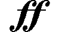
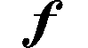
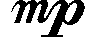
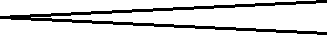
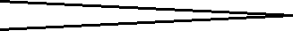
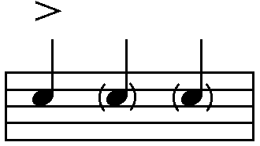

Dynamics can be described as volume control. Dynamic markings have to do with how loudly or softly a piece of music is played. The proper use of dynamics can make a song much more interesting and engaging.
Static Dynamics
We use Italian words and abbreviations to indicate dynamics. Dynamic markings are usually written at the bottom of a staff. Here are some of the most common dynamics that you are likely to encounter.
Fortissimo  Very Loud
Forte  Loud
Mezzo Forte Moderately Loud
Mezzo Piano  Moderately Quiet
Piano Quiet
Pianissimo Very Quiet
When you see one of these markings, it means you should play all the music at that volume until another dynamic direction is shown.
Changing Dynamics
These dynamic markings indicate that the music should gradually change in volume. We have to keep adjusting the volume until the next sign is given.
Crescendo  cresc. Gradually play louder
Diminuendo  dim. Gradually play softer
Accents and Ghost Notes
Another dynamic marking is the accent. This sign affects only one note and is written directly above the note it belongs to. An accent means that the note should be played louder. A ghost note is a note written in brackets. This means you should play the note very, very quietly.
